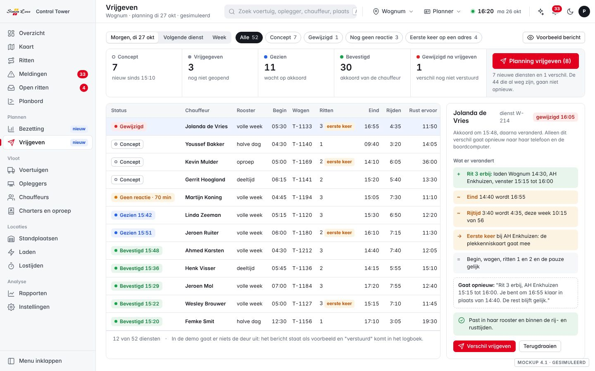
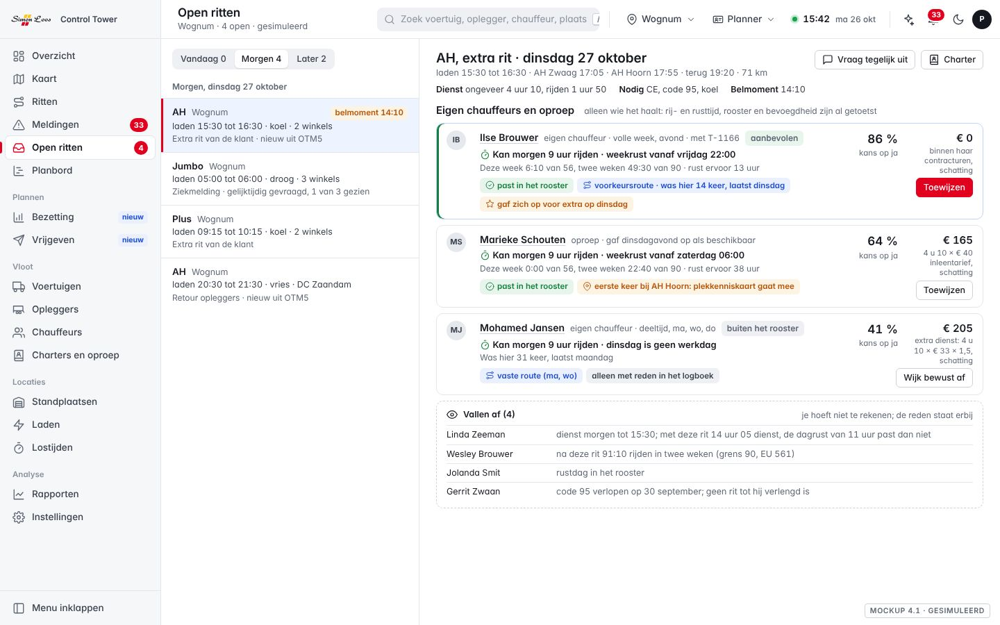
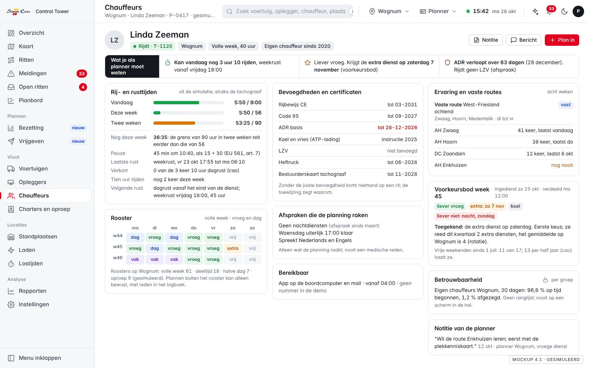
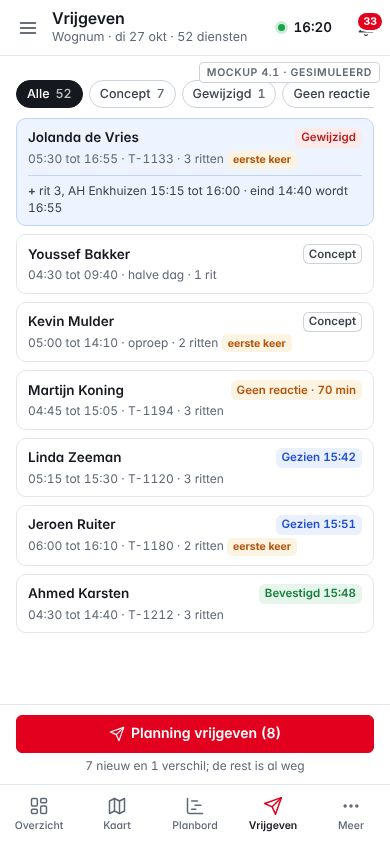
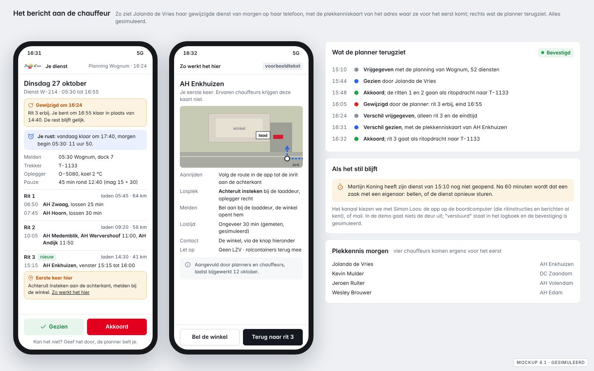
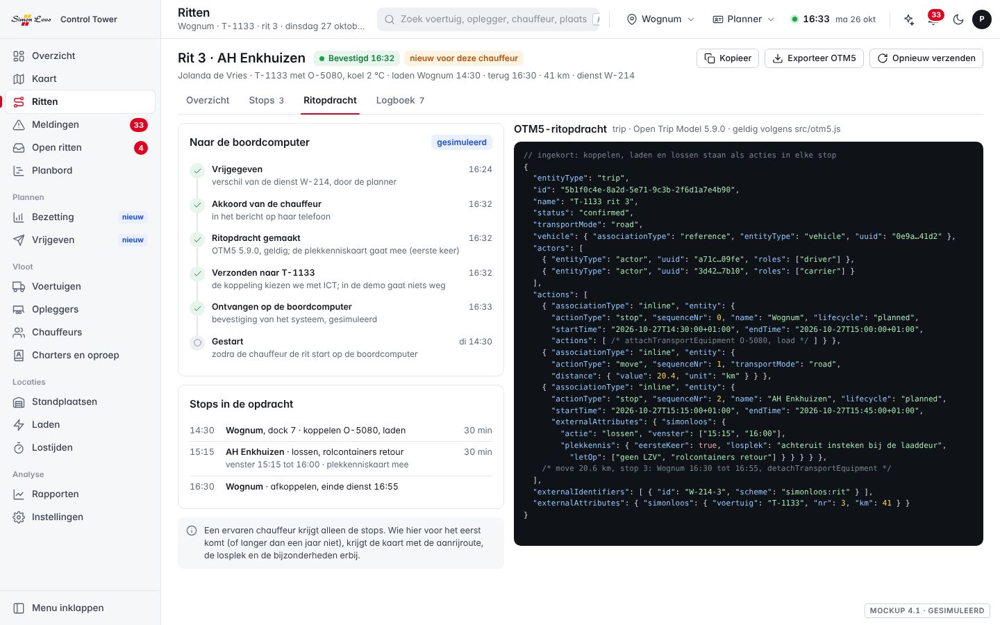
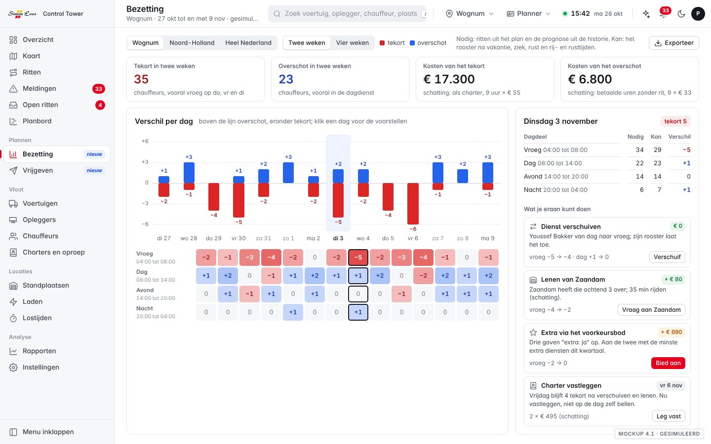
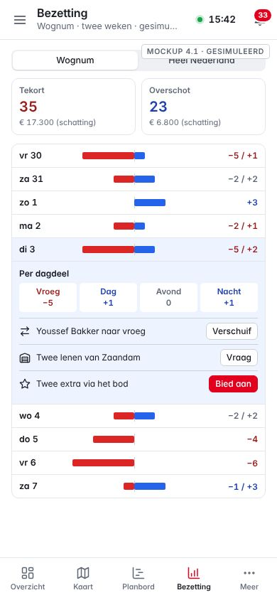
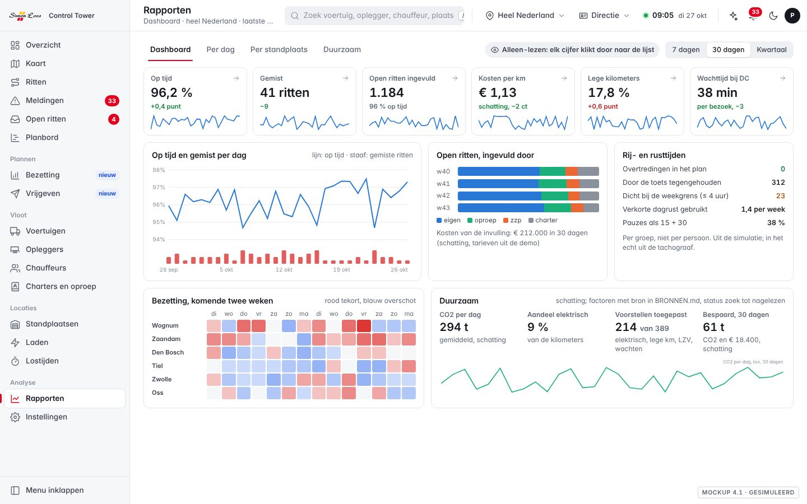
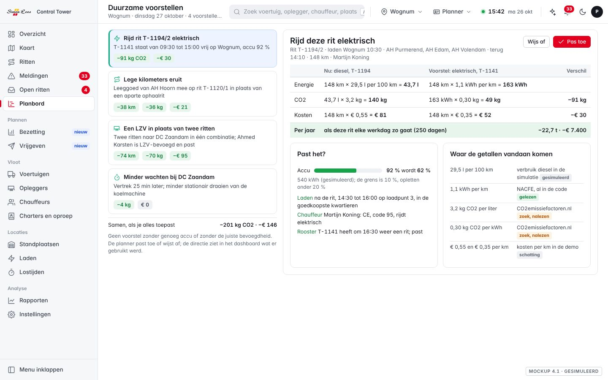

Control Tower 4.1: het planproces van begin tot eind
Wat er verandert voor de planner, de chauffeur en de directie: scherm voor scherm, met mockups, de lat waarop we het toetsen, vijf eigen ideeën, wat Simon Loos levert en in welke volgorde het live gaat.
26 oktober 2026Plan van Sem Appel, SafeTailVoor Sem en de directie

Vrijgeven, een van de nieuwe schermen. De planning van morgen voor Wognum met de status per dienst. Mockup; alle namen, ritten en tijden zijn gesimuleerd.
In het kort
Met 4.1 wordt de Control Tower het planproces van begin tot eind: van wie er morgen kan, via de planning die de planner vrijgeeft, tot het bericht op de telefoon van de chauffeur en de rit in de boordcomputer.
Voor de plannerHij rekent niet meer zelf met uren. Bij elke chauffeur staat wat hij nog mag rijden en wanneer zijn rust begint; wie het niet haalt of niet in zijn rooster past, staat niet in de lijst. Hij geeft de planning van morgen met één knop vrij en ziet wie het gezien en bevestigd heeft.
Voor de chauffeurHij krijgt zijn dienst van morgen op zijn telefoon, met zijn rust erbij en uitleg over een adres waar hij nog nooit was. Hij bevestigt met één tik. Verandert er iets, dan krijgt hij alleen het verschil. Hij geeft zijn voorkeur voor extra diensten zelf op.
Voor de directieEen dashboard met op tijd, gemist, invulling en kosten, bezetting, kosten per kilometer, lege kilometers, wachttijd, rij- en rusttijden en CO2, met een trend over dertig dagen. De directie kijkt mee op het planbord, alleen-lezen.
Te veel of te weinig mensenEen nieuw scherm Bezetting zet twee weken vooruit per dag en dagdeel naast elkaar wat de ritten vragen en wat het rooster kan, met de kosten als schatting en wat je eraan kunt doen.
Hoeveel werkTien tot elf dagen werk in zes stappen (schatting, uit het plan). De eerste twee stappen zijn de kern en kunnen apart live.
Wat we nodig hebbenVoor de simulatie niets. Voor een proef: het rooster en de contracturen, tachograaf of werkstaten, de open ritten uit het TMS in OTM5, het kanaal naar de chauffeur, de koppeling met de boordcomputer en een afspraak met de OR.
Alles in de schermen is gesimuleerd: de namen van chauffeurs komen uit de simulatie van de demo en zijn verzonnen. Elk bedrag en elke besparing is een schatting met de onderbouwing erbij.
1
Waarom 4.1
4.0 laat zien wat er gebeurt en helpt bij een gat. 4.1 maakt het plan zelf: wie kan, wat hij doet, en dat iedereen het weet.
Wat Sem en zijn vader vroegen
De planner hoeft niet na te denken over wat een chauffeur de afgelopen week reed. Het systeem houdt de rij- en rusttijden en de nachtrust van elke chauffeur zelf bij.
Het eigen rooster van de chauffeur telt, van een volle week tot een halve dag.
Is de planning akkoord, dan gaat hij per mail of app naar de chauffeur, zodat die weet wat hij de volgende dag of dienst doet.
De ritten gaan naar de boordcomputer.
Je ziet waar je te veel of te weinig mensen hebt.
Later op de avond kwamen erbij: vaste routes en voorkeursroutes, uitleg over een adres voor wie er voor het eerst komt, de chauffeur als persoon (bevoegdheden, afspraken, ervaring) en een dashboard voor de directie met duurzame voorstellen.
Twee besluiten van Sem: de directie ziet het planbord alleen-lezen, en het voorkeursbod is per chauffeur zichtbaar.
Hoe wij het lezen
Letterlijk: elf bouwstenen, van tellers en rooster tot een dashboard. Ze staan in hoofdstuk 2, elk met de mockup en de lat.
Het doel: een planning die klopt voordat hij de deur uitgaat. Geen dienst die een chauffeur niet mag rijden, geen chauffeur die het pas om 04:00 hoort, geen charter die op de dag zelf gebeld moet worden.
Wat er niet staat maar wel bij hoort: een vertraging vandaag raakt de rust van morgen; een wijziging na het vrijgeven kost vertrouwen bij de chauffeur; verlof en ziekte veranderen de bezetting. Daarover gaan de eigen ideeën in hoofdstuk 4.
Wat 4.0 al doet
Het planbord toetst elke sleep en elk voorstel per dag: na 4,5 uur rijden 45 minuten pauze, 9 uur rijden per dag (twee keer per week 10), en een dagrust van 11 uur, hoogstens drie keer 10 tussen twee weekrusten (de cao, strenger dan EU 561/2006). Voorkeuren per chauffeur tellen mee in de kans op een ja. Open ritten, de flexibele schil, Vraag tegelijk uit, het belmoment en een toewijzing over alle open ritten zijn er al. De dag kan in OTM5 5.9.0 en weer terug (src/otm5.js). 4.1 bouwt daarop voort; niets wordt dubbel gedaan.
2
De bouwstenen, scherm voor scherm
Per bouwsteen: wat er nu is, wat er verandert, en per scherm wat de planner ziet, wat hij klikt en wat er dan gebeurt. Met de lat uit acceptatie-4.1.md.
A
Een teller per chauffeur
Nu in 4.0
Dagregels per voertuig, als waarschuwing bij de kandidaat. De week en de twee weken telt niemand; de planner rekent zelf.
Wat verandert
Eén teller per chauffeur die zichzelf vult: vandaag, deze week, twee weken, de laatste rust, de volgende verplichte rust. Met de weekregels erbij: 56 uur per week, 90 per twee weken, weekrust 45 uur (verkort 24 met compensatie binnen drie weken), na zes dagrittijden een weekrust. De pauze van 45 minuten mag als 15 plus 30 (EU 561/2006, artikel 7).
Lat
Geen sleep, voorstel of toewijzing brengt iemand over de week- of tweeweekgrens of onder zijn weekrust (test op maandag 05:30 en 10:00 en op de oefendag). De teller op de chauffeurspagina is gelijk aan de som van het planbord.

Figuur 1. De kandidaatkaart van een open rit. Alleen wie het haalt staat in de lijst: rij- en rusttijd, rooster en bevoegdheid zijn al getoetst. Ilse Brouwer past in haar rooster, kent de route en gaf zich op voor extra werk. Onderaan wie afvalt en waarom: een te lange dag, de tweewekengrens, een rustdag, een verlopen code 95. Gesimuleerd.
Scherm
Wat de planner ziet
Wat hij klikt
Wat er dan gebeurt
Open ritten, de kandidaatkaart
Per kandidaat één regel: "Kan morgen 9 uur rijden · weekrust vanaf vrijdag 22:00". Wie het niet haalt staat onder "Vallen af", met de reden.
Toewijzen
De rit gaat door de toets en telt mee in de teller van die chauffeur en op het planbord.
Planbord
Een rustblok per chauffeur (dagrust en weekrust) dat je niet kunt overschrijven.
Een rit naar een chauffeur slepen
Past het niet, dan weigert het bord met de reden: "na deze rit 91:10 in twee weken".
Chauffeurspagina
Drie meters (vandaag, week, twee weken) en welke grens het eerst telt.
Niets
De teller loopt mee met het plan; straks met de tachograaf.
Assistent
De uitleg: "kan niet, na deze rit 58 uur in de week".
Een vraag
Naar de API gaat een nummer, nooit een naam (zoals nu).
Echte data: de teller leest straks uit de tachograaf (download via de boordcomputer) of de werkstaten. In 4.1 bouwen we het veld in OTM5-vorm, zodat de echte bron erin past.
B
Het rooster, en de chauffeur als persoon (J)
Nu in 4.0
Voorkeuren per chauffeur (dag, dagdeel, ritsoort, regio) als stille stip. Geen rooster, geen contract, geen bevoegdheden.
Wat verandert
Elke chauffeur een rooster: contract (volle week, deeltijd, halve dag, oproep), dagen en dagdelen, vakantie, ziek, rustdag. Plannen alleen binnen het rooster; afwijken kan bewust, met reden in het logboek. En een profiel met bovenaan drie regels "wat je als planner moet weten".
Lat
De planning plant alleen binnen het rooster (test). De toewijzing en het planbord weigeren een rit zonder de juiste bevoegdheid, met reden (test). Een certificaat dat binnen 90 dagen verloopt staat op het Overzicht. Nooit een medische reden, nooit een ranglijst per persoon.

Figuur 2. De chauffeur als persoon. Bovenaan wat de planner moet weten: ze kan vandaag nog 3 uur 10 rijden en haar weekrust begint vrijdag 18:00; ze krijgt de extra zaterdag uit het voorkeursbod; haar ADR verloopt over 63 dagen. De teller laat zien dat deze week de grens van 90 uur in twee weken eerder telt dan die van 56. Het rooster toont een volle week; op Wognum zijn er ook deeltijd, halve dagen en oproep. Gesimuleerd.
Scherm
Wat de planner ziet
Wat hij klikt
Wat er dan gebeurt
Chauffeurspagina
Drie regels bovenaan, dan de teller, het rooster van drie weken, bevoegdheden met vervaldatum, afspraken, bereikbaarheid, ervaring en vaste routes, het voorkeursbod, betrouwbaarheid per groep en een notitie.
Notitie, Bericht, Plan in
Een notitie komt met datum en naam in het logboek. Plan in toont de open ritten die in zijn rooster en teller passen.
Kandidaatkaart
"Buiten het rooster" in grijs.
Wijk bewust af
De planner vult een reden in; die staat in het logboek.
Overzicht
Certificaten die binnen 90 dagen verlopen (code 95, ADR, heftruck).
De regel
Naar het profiel van die chauffeur.
Echte data: het rooster en de bevoegdheden uit HR of het roostersysteem, de ervaring uit het TMS, de afspraken en notities van de planners zelf. Betrouwbaarheid alleen per groep; per persoon alleen voor de planner die hem inzet, nooit op een scherm in de hal.
C
Plannen en vrijgeven
Nu in 4.0
Het planbord toont vandaag en morgen, maar er is geen moment waarop de planning af is. Een chauffeur hoort zijn dienst van de planner.
Wat verandert
Een scherm Vrijgeven per standplaats, voor morgen of de volgende dienst. Elke dienst krijgt een status: concept, vrijgegeven, gezien, bevestigd, onderweg, afgerond. Eén knop "Planning vrijgeven". Verandert er daarna iets, dan gaat alleen het verschil opnieuw.
Lat
Na "Planning vrijgeven" heeft elke chauffeur een bericht en elke rit een OTM5-ritopdracht; een wijziging na het vrijgeven geeft alleen het verschil door (test). Op de oefendag plant de planner Wognum voor morgen zonder één keer zelf uren te tellen.
Figuur 3. Vrijgeven op het bureau. 52 diensten voor dinsdag: 7 concept, 3 vrijgegeven maar niet geopend, 11 gezien, 30 bevestigd en 1 gewijzigd. Rechts het verschil bij Jolanda de Vries: rit 3 erbij, ze is om 16:55 klaar in plaats van 14:40, en ze komt voor het eerst bij AH Enkhuizen. Gesimuleerd.

Op 390 pixels. De knop blijft onderaan staan.
Scherm
Wat de planner ziet
Wat hij klikt
Wat er dan gebeurt
Vrijgeven
Tellers per status; de diensten met rooster, begin, eind, rijtijd, rust ervoor; "eerste keer" bij een nieuw adres.
Planning vrijgeven (8)
Zeven nieuwe diensten en één verschil gaan naar de chauffeurs en de boordcomputer. De 44 die al weg zijn, gaan niet opnieuw.
Een gewijzigde dienst
Wat erbij komt, wat verandert, wat gelijk blijft, en het bericht dat opnieuw gaat.
Verschil vrijgeven, Terugdraaien
Alleen het verschil gaat. De status wacht weer op "gezien".
Telefoon of tablet
Dezelfde diensten als kaarten, de knop onderaan.
Planning vrijgeven
Hetzelfde; handig in de hal of 's avonds thuis.
D
Het bericht aan de chauffeur
Nu in 4.0
Geen bericht. De chauffeur hoort het van de planner, of ziet het pas in de boordcomputer.
Wat verandert
Bij vrijgeven krijgt elke chauffeur zijn dienst: begintijd, voertuig, oplegger, de ritten met tijden en adressen, de pauze en een link. Hij bevestigt met één tik, "gezien" en "akkoord". Blijft het stil, dan ziet de planner het en komt er na 60 minuten een zaak (de wachtklok, ideeënbank 44).
Lat
Bij vrijgeven een bericht per chauffeur, als voorbeeld op het scherm, "verstuurd" in het logboek en een gesimuleerde bevestiging; zonder bevestiging ziet de planner het (test). In de demo gaat er niets de deur uit.

Figuur 4. Het bericht op de telefoon. Links haar gewijzigde dienst: bovenaan wat er anders is, daaronder haar rust (vandaag klaar om 17:40, morgen begin 05:30: 11 uur 50) en de ritten. Bij AH Enkhuizen staat "Eerste keer hier"; in het midden de kaart die dan meegaat. Rechts wat de planner terugziet, van vrijgeven tot akkoord. Gesimuleerd; de tekst op de plekkenniskaart is een voorbeeld.
Scherm
Wat de chauffeur of planner ziet
Wat hij klikt
Wat er dan gebeurt
Telefoon van de chauffeur
Bovenaan zijn rust, dan de dienst; bij een wijziging alleen wat er anders is; bij een nieuw adres "Eerste keer hier".
Gezien, Akkoord, Kan niet
De status verschijnt bij de planner. Na akkoord gaan de ritten naar de boordcomputer. "Kan niet" maakt een open rit met kandidaten.
Vrijgeven
"Geen reactie · 70 min" in amber.
Bellen of opnieuw sturen
Na 60 minuten een zaak met een eigenaar.
Logboek
Verstuurd, gezien, akkoord, met de tijd.
Niets
Het bewijs voor later: wie wist wat, en wanneer.
Het kanaal kiezen we met Simon Loos. De boordcomputer van Trimble kent al een chauffeursapp met ritinstructies en berichten (systeemlandschap); dan zijn D en E één kanaal. Anders mail, of als proef de dienst als agenda-afspraak (idee 4 in hoofdstuk 4).
I
Vaste routes, voorkeursroutes en plekkennis
Nu in 4.0
Voorkeuren en de kans op een ja. Geen historie per adres, geen uitleg over een adres. De poortkaart per DC staat als idee in de ideeënbank (31).
Wat verandert
Per chauffeur de routes en klanten die hij vast of vaak rijdt, uit acht weken historie. Een vaste route gaat niet naar een ander zolang hij er is; een voorkeursroute weegt zwaar. Per klant en DC één kaart met hoe het daar werkt. Wie er voor het eerst komt (of langer dan een jaar niet), krijgt die kaart mee; een ervaren chauffeur niet.
Lat
Een vaste route gaat niet naar een ander zolang de vaste chauffeur beschikbaar is; de kandidaatkaart toont "was hier 14 keer, laatst dinsdag" (test). Op de oefendag krijgt een nieuwe chauffeur de kaart in bericht en ritopdracht, een ervaren niet (test).
Figuur 5. De plekkenniskaart naast de stop. Alleen voor wie hier voor het eerst komt. De tekst is een voorbeeld.Figuur 6. De ervaring op het adres op de kandidaatkaart. Een voorkeursroute met "was hier 14 keer, laatst dinsdag", een eerste keer waarbij de kaart meegaat, en een vaste route die buiten het rooster valt. Gesimuleerd.
Scherm
Wat je ziet
Wat je klikt
Wat er dan gebeurt
Kandidaatkaart
"Vaste route (ma, wo)", "voorkeursroute · was hier 14 keer, laatst dinsdag", "eerste keer bij AH Hoorn".
Toewijzen
Een vaste route wint zolang de vaste chauffeur kan. Bij een eerste keer gaat de kaart mee.
Telefoon van de chauffeur
"Eerste keer hier" bij de stop; de kaart met aanrijroute, losplek, melden, lostijd, contact en bijzonderheden, met een stukje luchtfoto.
Zo werkt het hier
De kaart opent; terug naar de rit met één tik.
Ritpagina en Vrijgeven
"Nieuw voor deze chauffeur"; het filter "Eerste keer op een adres".
Het filter
De planner ziet wie morgen ergens voor het eerst komt, en kan het aanvullen.
Plekkenniskaart
Wat planners en chauffeurs erbij zetten: "melden bij de loge", "achteruit insteken dock 4", "geen LZV".
Aanvullen
Met datum en naam; de lostijd komt uit wat de app al meet.
Echte data: de historie wie welke rit reed uit het TMS, de laad- en losinstructies uit het klantendossier (ORTEC en Navitrans hebben daar velden voor), en wat planners en chauffeurs nu in hun hoofd of op papier hebben. De aanrijroute hebben we al, uit de toegangsroutes van Overture.
E
De ritopdracht naar de boordcomputer
Nu in 4.0
src/otm5.js zet de gesimuleerde dag om naar OTM5 5.9.0 en weer terug, getest. Er gaat niets naar een boordcomputer.
Wat verandert
Bij vrijgeven of bij het akkoord van de chauffeur een OTM5-ritopdracht per rit: stops, tijden, laadadres, oplegger, en bij een eerste keer de plekkenniskaart. Te bekijken en te exporteren, met de status naar de boordcomputer.
Lat
Elke rit een ritopdracht die geldig is volgens src/otm5.js en zonder verschil terug te lezen is (test). In de proef pas na een test op één voertuig.

Figuur 7. De rit naast het OTM5-bericht. Links de weg naar de boordcomputer, van vrijgegeven om 16:24 tot ontvangen om 16:33. Rechts de ritopdracht zelf, ingekort: een trip met stops, tijden met de Nederlandse tijdzone, en onder "simonloos" wat OTM5 niet kent, zoals de plekkennis. Gesimuleerd; in de demo gaat er niets naar een voertuig.
Scherm
Wat de planner ziet
Wat hij klikt
Wat er dan gebeurt
Ritpagina, tab Ritopdracht
De stappen: vrijgegeven, akkoord, gemaakt, verzonden, ontvangen, gestart. Daarnaast de opdracht zelf.
Kopieer, Exporteer OTM5, Opnieuw verzenden
In de demo een bestand en een regel in het logboek. In de proef de echte koppeling.
Vrijgeven
Bij elke dienst of de opdrachten zijn aangekomen.
Niets
Een opdracht die niet aankomt, wordt een zaak.
F
Bezetting: te veel of te weinig mensen
Nu in 4.0
Open ritten per dag en de flexibele schil. Wat er volgende week tekortkomt, ziet niemand.
Wat verandert
Per standplaats en heel Nederland, per dag en dagdeel, veertien dagen vooruit: nodig, kan, het verschil en de kosten (schatting). Met knoppen: een dienst verschuiven, een collega lenen, extra diensten aanbieden via het voorkeursbod, een charter vastleggen.
Lat
De som per dag klopt met rooster en plan (test). De knoppen werken en komen in het logboek.

Figuur 8. Bezetting van Wognum voor twee weken. Het tekort zit vooral in de vroege dienst op dinsdag, donderdag en vrijdag, het overschot in de dagdienst. Een deel los je dus op door te verschuiven, zonder extra geld. Gesimuleerd.

Op 390 pixels. Een dag open, met de drie voorstellen.
Scherm
Wat de planner ziet
Wat hij klikt
Wat er dan gebeurt
Bezetting
Balken per dag: overschot boven de lijn in blauw, tekort eronder in rood. Daaronder per dagdeel.
Een dag
Rechts nodig, kan en verschil per dagdeel, en de voorstellen met hun effect en kosten.
Een voorstel
"Youssef Bakker van dag naar vroeg", "lenen van Zaandam", "extra via het voorkeursbod", "charter vastleggen".
Verschuif, Vraag aan, Bied aan, Leg vast
Het staat in het logboek en de balk werkt bij. Een aanbod gaat naar wie "extra: ja" opgaf, eerst naar wie dit kwartaal het minst extra reed.
Hoe de kosten geschat zijn. Een tekort rekenen we als charter voor een dienst van 9 uur tegen 55 euro per uur, het middelste chartertarief in de demo: 495 euro. In twee weken 35 tekorten, samen ongeveer 17.300 euro (schatting). Een overschot rekenen we als 9 betaalde uren zonder rit tegen 33 euro loonkosten per uur, de schatting die de demo voor een eigen chauffeur gebruikt: 297 euro. In twee weken 23, samen ongeveer 6.800 euro (schatting). Kilometers tellen we niet mee; met echte tarieven wordt het een echt bedrag.
K
Dashboard voor de directie en duurzame voorstellen
Nu in 4.0
Rapporten per dag: kosten van charters per week en de roosterfit per standplaats.
Wat verandert
Rapporten wordt voor de directie een dashboard, per standplaats en voor heel Simon Loos, met een trend over dertig dagen; elk cijfer klikt door naar de lijst erachter. En per rit voorstellen met de berekening: elektrisch in plaats van diesel, lege kilometers eruit, een LZV in plaats van twee ritten, minder wachten.
Lat
Het dashboard laadt binnen een seconde en elk cijfer klikt door (test). De som van de voorstellen op een dag is te herhalen (test). Geen voorstel zonder genoeg accu of zonder de juiste bevoegdheid (test).

Figuur 9. Het dashboard, als directie bekeken. Bovenaan "alleen-lezen: elk cijfer klikt door". Rij- en rusttijden per groep, niet per persoon. De duurzame cijfers zijn schattingen; de factoren staan met bron in BRONNEN.md en heten "zoek" tot ze nagelezen zijn. Gesimuleerd.

Figuur 10. "Rijd deze rit elektrisch", met de berekening. Een rit van 148 km: diesel 43,7 liter en 140 kg CO2, elektrisch 163 kWh en 49 kg; 91 kg en 30 euro minder per rit, 22,7 ton en 7.400 euro per jaar als de rit elke werkdag zo gaat (schatting). Bronnen: het verbruik van 1,1 kWh per km komt van NACFE en staat al in de code; 29,5 liter per 100 km is het verbruik in de simulatie; 3,2 kg CO2 per liter diesel en 0,30 kg per kWh zijn schattingen die we nalezen op CO2emissiefactoren.nl; de kosten per km zijn de schattingen uit de demo.
Scherm
Wat je ziet
Wat je klikt
Wat er dan gebeurt
Dashboard (directie)
Op tijd, gemist, invulling en kosten, bezetting, kosten per kilometer, lege kilometers, wachttijd bij DC's, rij- en rusttijden, CO2 en het aandeel elektrisch.
Een cijfer
De lijst erachter, alleen-lezen. De directie kijkt, de planner handelt.
Duurzame voorstellen (planner)
Per voorstel de besparing in kilo's CO2 en euro's, de berekening en de bron van elk getal.
Pas toe, Wijs af
De rit verandert, of de reden van afwijzen gaat in het logboek. Het dashboard telt wat er gebruikt werd.
3
Het voorkeursbod en de directie
Twee besluiten van Sem: het voorkeursbod is per chauffeur zichtbaar, en de directie ziet het planbord alleen-lezen.
G
Het voorkeursbod per chauffeur
Elke chauffeur geeft wekelijks zijn voorkeur op open diensten en ritten: ritsoort, tijden, weekend, regio, en wat hij liever niet doet. Zo werkt crew bidding in de luchtvaart en zelfroosteren in de zorg (ideeënbank 3 en 51). De toewijzing weegt de stem mee en rouleert: wie de laatste weken al veel extra reed of veel weekenden had, komt later aan de beurt. Per rit legt het systeem uit waarom iemand hem kreeg.
Scherm
Wat je ziet
Wat je klikt
Wat er dan gebeurt
Chauffeurspagina
Het bod van deze week: "liever vroeg", "extra: za 7 nov", "liever niet: nacht, zondag", en wat hij kreeg met de uitleg: "eerste keus; ze reed dit kwartaal 2 extra diensten, het gemiddelde op Wognum is 4".
Niets (de chauffeur dient het in)
De vrije weekenden in het halfjaar tellen mee (de cao noemt er 13 per half jaar).
Kandidaatkaart
"Gaf zich op voor extra op dinsdag".
Toewijzen
Bij twee gelijke kandidaten wint de voorkeursstem.
Bezetting
"Drie gaven extra: ja op".
Bied aan
Het aanbod gaat eerst naar wie dit kwartaal het minst extra reed.
Telefoon of formulier
Het bod voor volgende week, met een sluitingstijd.
Indienen
In de demo gesimuleerd per chauffeur.
Lat (G): op de oefendag krijgt een rit met twee gelijke kandidaten de chauffeur met de voorkeursstem; over acht gesimuleerde weken is de spreiding van extra ritten en weekenden over de chauffeurs van Wognum kleiner dan nu (de meting als schatting in de README). Signaal: het bod is per chauffeur zichtbaar voor de planner en voor hemzelf, maar nooit als ranglijst aan de muur. Een voorkeursbod en een eerlijkheidsregel raken het rooster en dus de instemming van de OR.
H
De directie kijkt mee, alleen-lezen
Met de rol Directie opent het planbord, Vrijgeven en Bezetting gewoon, maar zonder slepen, zonder knoppen die iets veranderen en zonder voorstellen toe te passen. Bovenaan staat "alleen-lezen", zodat niemand denkt dat iets kapot is. Elk cijfer op het dashboard klikt door naar dezelfde lijst die de planner ziet. Zo praten directie en planning over dezelfde cijfers, en blijft de beslissing bij de planner.
Lat (H): de directie opent het planbord alleen-lezen: kijken, geen slepen, geen voorstellen toepassen (test). Dit sluit aan bij idee 43 uit de ideeënbank: een hal-scherm als alleen-lezen bord met een eigen sleutel.
4
Vijf eigen ideeën
Niet gevraagd, wel nodig: vijf dingen die de bouwstenen pas echt laten werken. Elk met het probleem, een voorbeeld van elders, een schatting en een goedkope proef.
1
De rust van vannacht bewaakt de dienst van morgen
Probleem
Een chauffeur die vandaag laat terug is, kan morgen niet vroeg beginnen. Nu merkt de nachtplanner dat om 04:00, als de wagen niet vertrekt. De teller van bouwsteen A kijkt naar het plan, niet naar de vertraging van vandaag.
Wat het doet
Zodra een dienst van vandaag uitloopt, rekent de app de rust tot morgen opnieuw uit. Is die te kort, dan wordt het om 18:00 een zaak en geen gat om 04:00: "Jolanda is om 18:20 klaar; morgen 05:30 geeft 11 uur 10, nog 15 minuten later en het past niet." De rust staat ook als eerste regel in het bericht (figuur 4).
Komt van
Crewplanning in de luchtvaart rekent bij een vertraging meteen de rust tot de volgende dienst opnieuw uit (de regels voor vlieg- en rusttijden), zodat de reservecrew 's avonds al gebeld wordt.
Levert op (schatting)
Elk gat dat 's avonds zichtbaar is, wordt een gewone open rit. In de simulatie kost een nachtrit 10 tot 17 minuten bellen (ideeënbank 21); een gat om 04:30 eindigt vaak in een charter van ongeveer 495 euro.
Goedkope proef
Twee weken eindtijden uit de tachograaf van Wognum naast de begintijden van de dag erna. Tel hoe vaak de rust onder 11 of 10 uur kwam, en hoe laat de planner het wist.
2
Een tijdhek na het vrijgeven
Probleem
Vrijgeven heeft alleen waarde als het plan daarna rustig blijft. De klacht van chauffeurs gaat over de planning en de wijzigingen (ideeënbank 3). Met vrijgeven wordt elke late wijziging zichtbaar, en dus ook hoe vaak het gebeurt.
Wat het doet
Binnen bijvoorbeeld twaalf uur voor het begin vraagt een wijziging aan een vrijgegeven dienst een reden, en de app zoekt eerst een oplossing zonder die dienst: een concept, een oproepkracht, de reserve. Per standplaats telt hij de late wijzigingen.
Komt van
Het tijdhek in productieplanning: vlak voor de productie ligt het plan vast. In de Verenigde Staten vragen de Fair Workweek-wetten in onder meer New York en Oregon roosters ruim vooruit en een vergoeding bij een late wijziging (zoek: nalezen).
Levert op (schatting)
Minder late wijzigingen en een cijfer om op te sturen. Doel: de helft minder late wijzigingen binnen drie maanden (schatting, eerst meten).
Goedkope proef
Vier weken het logboek: hoeveel wijzigingen na het vrijgeven, en hoeveel binnen twaalf uur voor het begin. Dan één standplaats met het hek.
3
Verlof aanvragen met de bezetting erbij
Probleem
Een vrije dag wordt nu goedgekeurd zonder te zien wat hij doet met de bezetting. Op een dag met al vier tekort wordt het dan een charter.
Wat het doet
Bij elke aanvraag toont de app de dag uit Bezetting: "dinsdag 3 november: tekort 5, met deze dag 6". Per dag een verlofruimte uit het rooster en de prognose. De chauffeur krijgt dezelfde dag antwoord.
Komt van
Verlofruimte per week in de zorg en bij luchtvaartmaatschappijen, waar verlof binnen een vast aantal plekken per periode wordt toegekend.
Levert op (schatting)
Minder tekort op drukke dagen; elk vermeden tekort is ongeveer een charter van 495 euro (de rekenregel van F). En sneller antwoord voor de chauffeur.
Goedkope proef
De volgende twintig aanvragen van Wognum met de planner door Bezetting halen. Tel hoeveel er op een tekortdag vallen en hoe snel er antwoord was.
4
De dienst als afspraak in de agenda van de telefoon
Probleem
Voor bouwsteen D moet er een kanaal zijn. Een eigen app of een koppeling met de boordcomputer kost tijd, en zonder kanaal geen proef.
Wat het doet
Het bericht krijgt een agenda-bestand mee. De dienst staat dan in de agenda van elke telefoon, met een herinnering de avond ervoor. Een wijziging vervangt dezelfde afspraak, dus de chauffeur ziet alleen het verschil. Gezien en akkoord gaan via de link.
Komt van
Roosterapps in de zorg en de luchtvaart zetten diensten in de agenda van de telefoon. De standaard iCalendar (RFC 5545) heeft er een vast nummer per afspraak en een volgnummer per versie voor.
Levert op (schatting)
Een werkend kanaal voor de proef zonder app en zonder koppeling, voor bijna niets: één bestand per dienst.
Goedkope proef
Tien chauffeurs van Wognum, twee weken, de dienst als agenda-afspraak per mail naast de gewone manier. Tel hoe snel "gezien" komt en of er minder misverstanden zijn.
5
Geplande rijtijd uit de gereden tijd
Probleem
De teller en de rust kloppen alleen als de geplande rijtijden kloppen. Is een rit in het plan te kort, dan belooft "kan nog 3 uur 10" uren die er niet zijn, en loopt de dag uit (idee 1).
Wat het doet
Per soort rit en dagdeel zet de app de geplande rijtijd op wat er in acht van de tien gevallen werkelijk gehaald wordt, uit de tachograaf. Een rit die structureel uitloopt, valt op.
Komt van
Luchtvaartmaatschappijen zetten de geplande vliegtijd per route en seizoen op de gevlogen tijden van eerder, niet op de kortste tijd.
Levert op (schatting)
Minder uitlopende diensten en minder rust die te kort wordt. Hoeveel, weten we pas na de proef.
Goedkope proef
Vier weken gepland tegen gereden per rit op Wognum. Tel hoeveel ritten meer dan vijftien minuten uitlopen, en in welk dagdeel.
Waarom deze vijf. Ze maken bouwstenen A tot en met F pas betrouwbaar: de teller (1 en 5), het vrijgeven (2), de bezetting (3) en het bericht (4). Bewust niet gekozen: een ziekmelding die in één keer de open rit en de kandidaten maakt (zit grotendeels in Open ritten en Vraag tegelijk uit, ideeënbank 21 en 44); een voorspelling voor de feestweken (is ideeënbank 6); een ruilbeurs voor diensten (bouwt op ideeënbank 9 en heeft eerst het rooster, het kanaal en de OR nodig); een kalender voor de 13 vrije weekenden (zit in het voorkeursbod en het profiel).
5
Wat Simon Loos levert voor de proef
Voor de simulatie niets. Voor een proef op één standplaats het volgende, liefst als export, anders als een paar weken in Excel.
Wat
Van wie
Waarvoor
In welke vorm
Rooster en contracturen per chauffeur
HR of het roostersysteem
B, F, J
Per week, per chauffeur: contract, dagen, dagdelen, vakantie, ziek
Tachograaf of werkstaten
Boordcomputer of tachograafanalyse
A, idee 1 en 5
Per dag per chauffeur: rijden, werk, pauze, rust
Open ritten met venster
TMS (ORTEC, Navitrans)
C, F
OTM5; Albert Heijn stuurt de ritten al als OTM5
Historie: wie reed welke rit
TMS
I, F
Acht weken, per rit de chauffeur
Laad- en losinstructies per adres
Klantendossier, planners, chauffeurs
I
De velden in ORTEC of Navitrans, en wat nu op papier staat
Bevoegdheden en certificaten
HR
J
Per chauffeur met vervaldatum: rijbewijs, code 95, ADR, LZV, heftruck
Het kanaal naar de chauffeur
ICT en HR
D
Welke app of mail, en wie de adressen beheert
De boordcomputer en zijn koppeling
ICT en de leverancier (in de repo: Trimble FleetXPS, nu onder Platform Science; nakijken)
E
Welk merk, welke API, wie de sleutel heeft, een testvoertuig
Verbruik en kosten per voertuigsoort
Wagenpark en financiën
K
Liters of kWh per km, kosten per km, de CO2-factoren die Simon Loos zelf rapporteert
Een afspraak met de OR
Directie en OR
G, J, D
Over het voorkeursbod en wat er per chauffeur zichtbaar is
6
Volgorde, schatting en wat apart live kan
Volgorde is prioriteit. Wat af en groen is, gaat mee; wat niet af is, blijft eruit, net als bij 4.0. De dagen zijn een schatting in agentrondes zoals bij 4.0: Sem bouwt via SafeTail, met AI als versneller zoals bij de demo, of stuurt het eigen team van Simon Loos aan.
Stap
Wat
Bouwstenen
Dagen
Apart live?
1
Het rooster en de tellers per chauffeur, met de weekregels; het model achter Bezetting
A, B, F
2
Ja. De kandidatenlijst wordt meteen beter, zonder dat er iets de deur uitgaat.
2
Vrijgeven, het bericht, de ritopdracht en het scherm Bezetting
C, D, E, F
2 tot 3
Ja, samen met 1. In de proef gaan bericht en ritopdracht pas echt weg na een test op één voertuig.
3
Voorkeursbod en eerlijk verdelen, vaste routes en plekkennis, het chauffeursprofiel
G, I, J
3
Plekkennis en profiel wel; het voorkeursbod pas na de afspraak met de OR.
4
Dashboard voor de directie en duurzame voorstellen, en de directie alleen-lezen
K, H
2
Ja, het is alleen-lezen en raakt het plan niet.
5
De kleine punten uit 4.0 (tekst in de Assistent, lange namen op 390 pixels, tests, de demosite in losse bestanden)
0,5
Ja.
6
Eindcontrole door een aparte agent tegen acceptatie-4.1.md, dan dezelfde oplevering als 4.0
0,5
Samen
10 tot 11
De schatting uit het plan.
7
Risico's en signalen
Alleen als signaal, geen juridisch advies. Elk punt moet voor de proef nagekeken worden door wie daarover gaat.
AVG
Rij- en rusttijden uit de tachograaf, het rooster, de bevoegdheden en de berichten zijn persoonsgegevens, met een wettelijke bewaartermijn voor de tachograaf. Een dienst per mail of in de agenda van een telefoon is een persoonsgegeven in een extern kanaal: wie de adressen beheert, hoe lang het bewaard blijft, en bij de agenda een keuze van de chauffeur zelf. Nodig: een verwerkersovereenkomst en een bewaartermijn per soort gegeven.
OR
Een voorkeursbod en een eerlijkheidsregel veranderen hoe het rooster tot stand komt en raken de instemming van de OR. Betrouwbaarheid en de kans op een ja zijn bij echte data persoonsgegevens die op een beoordeling lijken: alleen per groep, per persoon alleen voor de planner die hem inzet, nooit op een scherm in de hal. Afspraken in het profiel: nooit een medische reden.
Cao
De cao-regels van 2026 (Staatscourant 2026, nr. 7211) staan in de code met status zoek en moeten voor de proef nagelezen worden: de verkorte dagrust van 10 uur, de 13 vrije weekenden per half jaar, de venstertijden en de termijnen voor het bekendmaken van diensten. Die termijnen bepalen ook wanneer "Planning vrijgeven" uiterlijk moet.
Boordcomputer
Een ritopdracht naar de boordcomputer is een wijziging in een systeem van een leverancier. Dat gaat in de proef pas na een test op één voertuig, met een weg terug. Bij een overgang van leverancier (Trimble naar Platform Science, nakijken) kan de koppeling veranderen; OTM5 als vorm houdt ons daar los van.
Cijfers
De CO2-factoren en de kosten per km zijn schattingen tot ze nagelezen zijn (CO2emissiefactoren.nl, de eigen cijfers van Simon Loos). Wie besparingen naar buiten brengt, doet dat pas met nagelezen factoren.
Klanten en merken
De plekkenniskaart gaat over adressen van klanten. Wat erop staat, komt van planners en chauffeurs en niet van de klant zelf; laat de klant meekijken voordat het buiten Simon Loos gedeeld wordt.
Wat we moeten doorvragen
Planners: wanneer de planning van morgen nu af is, en hoe laat een chauffeur hem uiterlijk moet hebben; hoe vaak er na dat moment nog iets verandert; wat er nu op papier staat over adressen.
HR: waar het rooster en de bevoegdheden staan, en of er een export is.
ICT: welke boordcomputer, welke koppeling en wie de sleutel heeft; welke mail of app de chauffeurs nu gebruiken.
Directie: welke cijfers op het dashboard het eerst moeten, en welke CO2-factoren Simon Loos al gebruikt in de eigen rapportage.
OR: of het voorkeursbod als proef op één standplaats mag, en onder welke voorwaarden.
Control Tower 4.1 · plan van Sem Appel, SafeTail · 26 oktober 2026. Alle schermen zijn mockups met gesimuleerde gegevens.